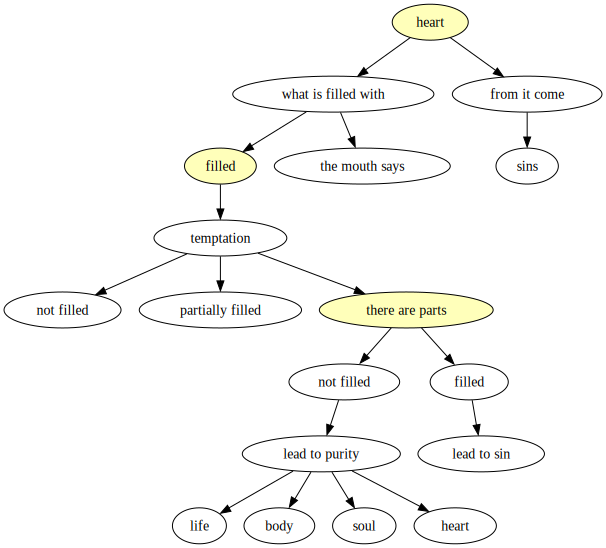

An analysis of Christ's words about adultery in the heart
Let us look more closely at the words of Christ: "You have heard that it was said to those of old, ‘You shall not commit adultery.’ But I say to you that whoever looks at a woman to lust for her has already committed adultery with her in his heart. If your right eye causes you to sin, pluck it out and cast it from you; for it is more profitable for you that one of your members perish, than for your whole body to be cast into hell. And if your right hand causes you to sin, cut it off and cast it from you; for it is more profitable for you that one of your members perish, than for your whole body to be cast into hell." (Matthew V, 27-30).
Below are graphs created using GraphViz and my program gvti. They represent the meaning of these words in graphical form with an analysis of the components.
Immediately after speaking of the heart, Christ speaks of temptations from the members of the body. As the commentators note, this is not about the physical parts of the body. It is clear that it is the "right" parts of the body that can tempt. This is illustrated schematically below.
From the preceding, we can see the connection between the heart and the other parts of the body in Christ's words. It is this connection that is the focus of this publication. Let us leave lust aside for the moment and consider in more detail the relationship between the heart and the eye, as well as the other "parts of the body". They are to some extent matched, and there are certain relationships between them that are worth exploring.
Let us recall another of Christ's words: "For out of the abundance of the heart his mouth speaks" (Luke VI, 45). And also: "But those things which proceed out of the mouth come from the heart, and they defile a man. For out of the heart proceed evil thoughts, murders, adulteries, fornications, thefts, false witness, blasphemies." (Matthew XV, 18-19).
If the heart is full, then a person reveals it and does it. But if it is not filled, and there is both what is directed towards sin and what is not, then it is temptation. Temptation is a state of "partial fullness". The direction of the look (hence the eyes) allows us to influence the extent to which the heart is "full". And what follows about the other parts of the body, which symbolise activity and lifestyle, indicates that they can (and do) influence the same "fullness" of the heart. So, these "body parts" are like an extension of the heart, and to summarise, the heart with these body parts is like a whole organism, the whole human body.
These passages show that we can understand the heart as the "inner human being". The Apostle Peter said: "Do not let your adornment be merely outward—arranging the hair, wearing gold, or putting on fine apparel— rather let it be the hidden person of the heart, with the incorruptible beauty of a gentle and quiet spirit, which is very precious in the sight of God." (1 Peter III, 3-4).
The heart is like the "centre, focus and concentration of the human being".
(Ukrainian original: 27/07/2020) How to overcome temptation. Part of the work "Adultery. The Full Version", which is important for understanding
To win the fight against sin, two key qualities are needed, which are revealed when we think deeply about the word "enter". These are determination ("to tear it out and cast it from oneself", to be "with one part of the body"), and the childlike ability to receive new things and live by them. This latter is seen in the words of Christ: "Let the little children come to Me, and do not forbid them; for of such is the kingdom of God. Assuredly, I say to you, whoever does not receive the kingdom of God as a little child will by no means enter it." (Mark X, 14-15).
If we do not receive the new Kingdom of God like children in our lives, if we are not able to be renewed every day and every hour, we will not be able to overcome sin indeed. It is precisely this ability that we need to learn from children. And without it, we will not be able to enter the Kingdom of God. Lord, may You help us!
Returning to the words of Christ about the heart and comparing them with our own state, we see that the heart is often "underfilled". A full heart is manifested outwardly (in particular through the mouth), and if it is not yet manifested, it is partially full, or we can say that it has some of both. How, then, can we overcome sin, temptation, passions, and love purity and faithfulness?
We need to recognise temptation or sin. These are the right parts of the body in the context of Christ's words. Then we need to come to love purity and faithfulness in our hearts, to come to desire them in our hearts (at least partially, but it is difficult without that at all), to come to love God and our neighbours and ourselves, and then to decisively reject sin and even 'cast from oneself' the temptation. In doing so, we move from the eyes, hands, and feet to the heart (in the context of Christ's words). They are mysteriously connected in such a way that firm mastery of the former and movement towards the latter is similar to deliverance, to heroic liberation. It is impossible for a person who is not freed by God to establish themselves in purity and faithfulness in their heart, and therefore Christ does not say: "Throw out part of your heart," but says, "Reject the temptation." But even in fairy tales, the princess freed by the prince reciprocates his love. This image suggests that the heart becomes grateful to God for deliverance.
I would also add that it happens that a person is strongly connected with sin, and then such deliverance is called "denial of oneself" elsewhere - as if you lose a part of yourself, even all of yourself. And in this sense, "taking up your cross" means that you cannot help but change, cannot help but be freed from sin if you become a disciple of Christ. That is, if you want to be with Christ, you cannot remain in sin as you were before.
Section III. On dialogue with contemporary culture.
In contemporary culture, views differ on all of the above. But sometimes it is said that trust needs to be built in a relationship in order for them to be deep and truly beneficial. We can safely continue this idea by saying that such trust is only possible in full in marriage. Trust is not when you are afraid to dare, but when nothing is dangerous. Trust is where there is security, where there is reliability. They are possible in marriage. In fact, this is a common opinion among experienced believers.
Given all that has been said, as well as what has not been included here, it should also be said that the vision of relationships, their assessment will be different for those who accept it and those who reject it. Not everywhere, not in everything, but it will be. This is because we are talking here about the essentials that cannot be "bypassed". And if you accept the essential, or, on the contrary, reject the essential, then, of course, there cannot be one opinion, but there will be different ones.
On the eve of the Feast of the Annunciation to the Blessed Virgin Mary (the date of the creation the Ukranian original work), I will also recall the prophetic words of the Holy Spirit spoken by Simeon the God-receiver: "Behold, this Child is destined for the fall and rising of many in Israel, and for a sign which will be spoken against (yes, a sword will pierce through your own soul also), that the thoughts of many hearts may be revealed." (Luke II, 34-35). O Lord, have mercy on us through the prayers of Your Most Holy Mother and all the saints! Amen.
Source of the Ukranian original: original